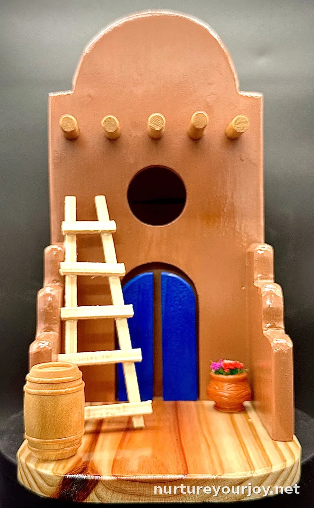
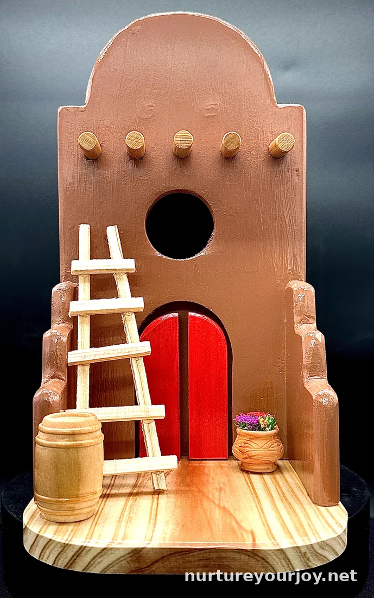
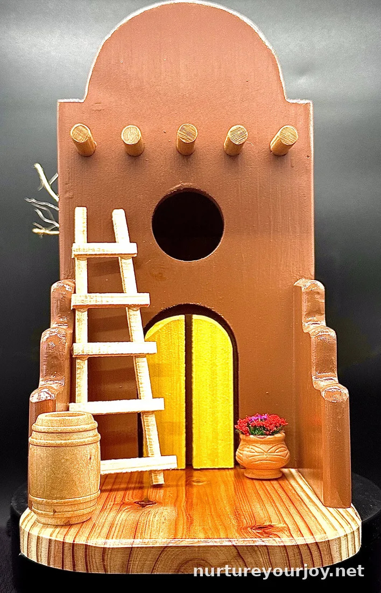
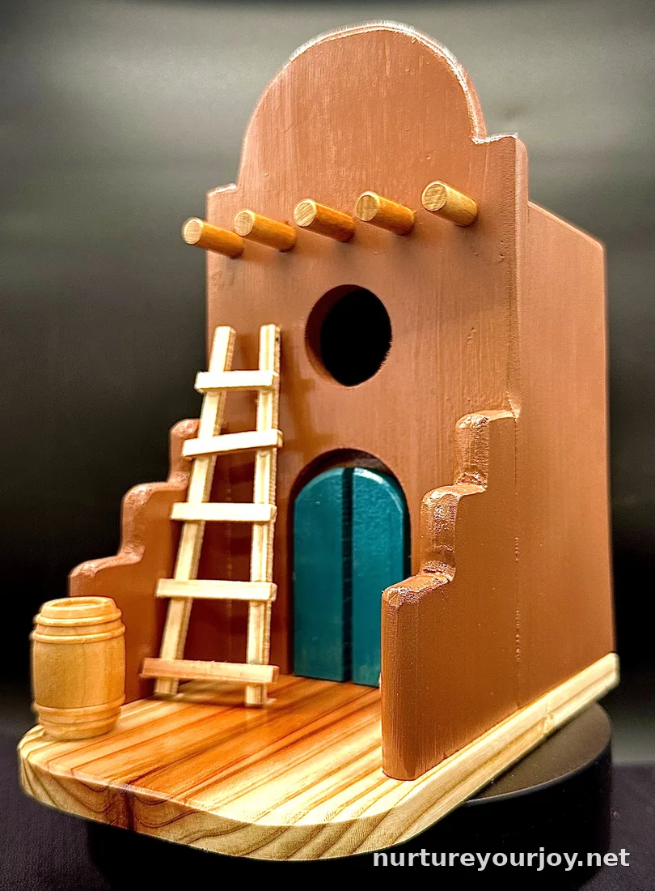
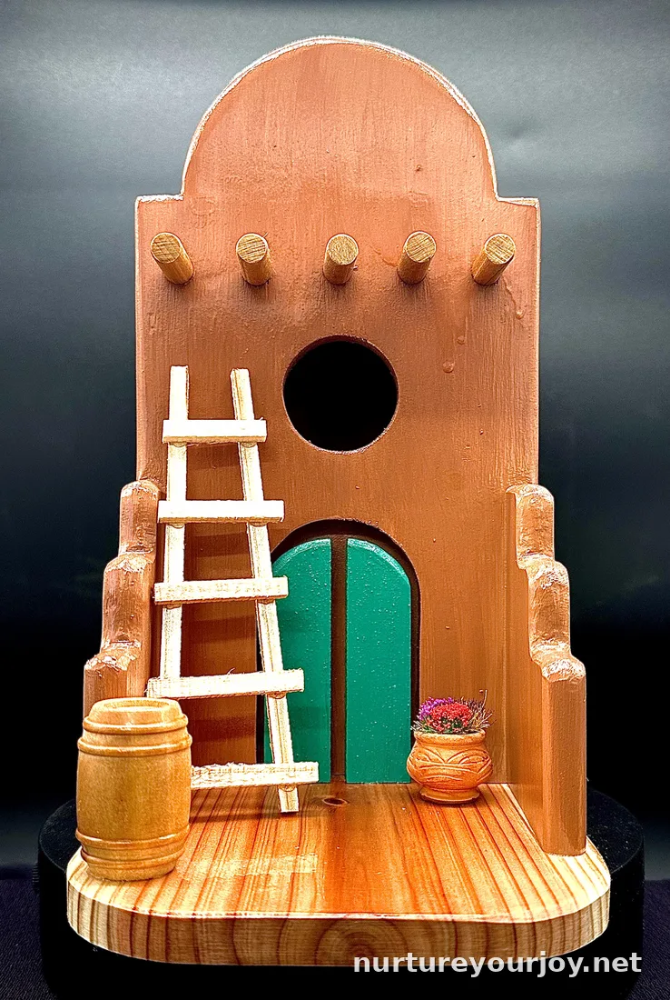

Each Pueblo is handmade from cedar and finished to look like adobe, with stepped side walls, hand-set viga beams, a rustic wooden ladder, and a tiny barrel and real clay flower pot waiting on the porch. Inspired by the pueblo-style homes of the Southwest. Handmade by Wendy in Ash Fork, Arizona.
Approx. dimensions: 10.5" tall x 9" deep x 5.5" wide
Did you know? Before front doors, many pueblo homes were entered from the roof by ladder. That’s why every Pueblo has one.

A handmade Pueblo birdhouse with a cobalt blue arched door, built from cedar and finished to look like adobe, with hand-set viga beams, a rustic ladder, a tiny barrel and a real clay flower pot on the porch.

A handmade Pueblo birdhouse with a red arched door, built from cedar and finished to look like adobe, with hand-set viga beams, a rustic ladder, a tiny barrel and a real clay flower pot on the porch.

A handmade Pueblo birdhouse with a yellow arched door, built from cedar and finished to look like adobe, with hand-set viga beams, a rustic ladder, a tiny barrel and a real clay flower pot on the porch.

A handmade Pueblo birdhouse with a teal arched door, built from cedar and finished to look like adobe, with hand-set viga beams, a rustic ladder, a tiny barrel and a real clay flower pot on the porch.

A handmade Pueblo birdhouse with a turquoise arched door, built from cedar and finished to look like adobe, with hand-set viga beams, a rustic ladder, a tiny barrel and a real clay flower pot on the porch.
Western Birdhouses · Spanish Mission Birdhouses · Whimsical Birdhouses · Handmade Bird Feeders · Garden Carry-Alls & Dust Pans · Cedar Boxes · The Birdhouse Kit
Find us in person at Arizona craft shows and markets. See the show schedule.